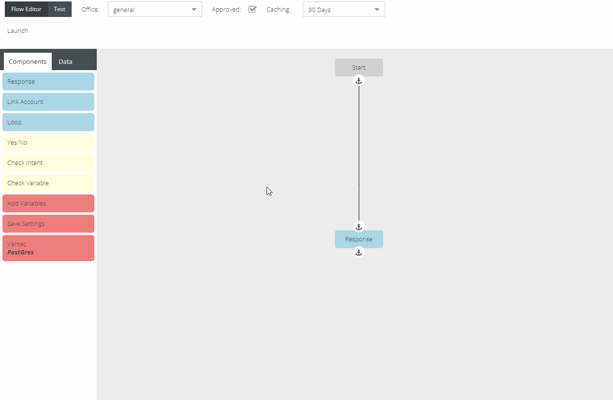
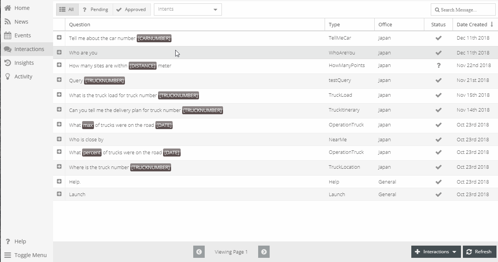
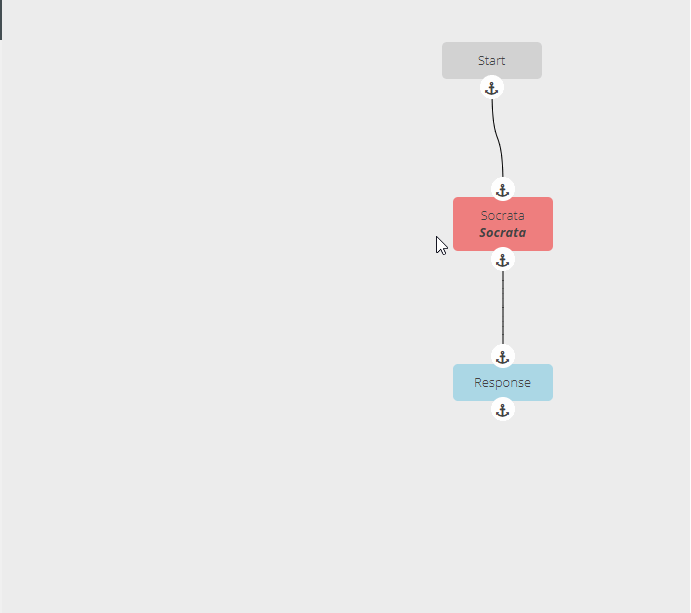
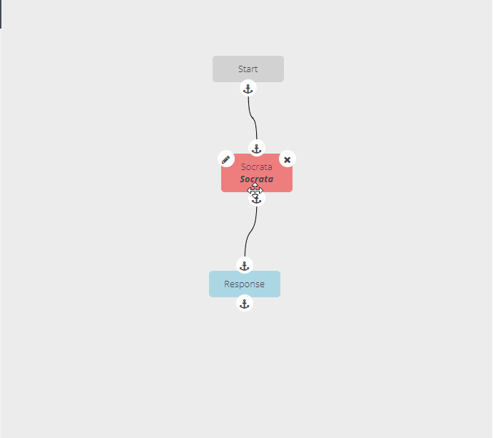
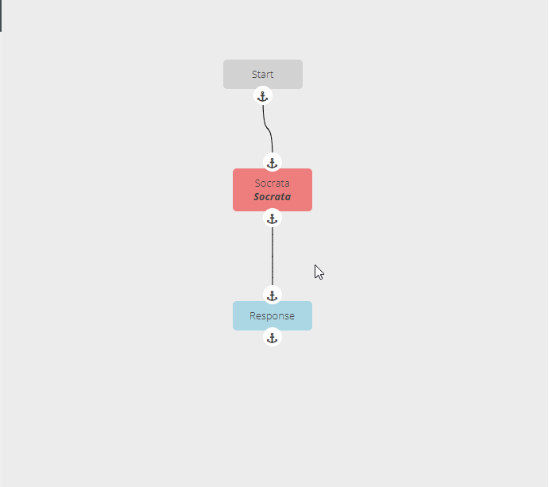

Interaction Guides¶
Create Interaction and Response¶
- Choose interaction type
- Located in the bottom right, press and choose the interaction type
- Fill out interaction template
Located at top
Select office the interaction is addressing
Slot Types that are predefined will be look like {Date}
Select Slot Values from the drop-down
Multiple slot values can be chosen to narrow the interaction to a subset of values
Interaction will not be acknowledged by the skill until approved, check the box
Ability to specify if the interaction should be cached and for how long
Slots filled within the template give Alexa & Google context to search for information
Data Field¶
This data field will be found throughout the different components
- List|Left-Hand Side|Right-Hand Side|Name - Collection or list of Items; ex. News or Events have multiple items to iterate through
Path - Specifies how to interpret the text; considered input
- e.g. connectors.data is the list
Function - Interpret input as a function to be called, some functions may take arguments.
String - Interpret input as String
Number - Interpret input as a Number
- Fill out Flow - Interaction Flows
- Components - Located in left menu under Components
To fill out components in the flow, mouse over. The left button, pencil icon, is to edit; the right button, x icon, is to delete the component. To connect components click the initial component anchor and click the next connecting component anchor. To remove a connecting line, RIGHT-CLICK the starting anchor and press DELETE.
- Response
Voice Message - Spoken message for a response
Card Title - Header for the message on devices with a screen
Display Message - Message to be shown on devices with a screen
Image URL - Image shown on devices with a screen, the sizes are for varying device screen sizes
- Small Image - recommended size: 720 width x 480 height
- Large Image - recommended size: 1200 width x 800 height
Accessibility Text - Description of the image (For Screen Readers)
Display Templates - Defaults to a basic card template
If display card template is selected, it will enable/disable certain fields.
- Background Image URL - The image that will be used as the background. The right button will open the link in a new tab to display image
- Accessibility Text
Directives - Playing video, audio, or third party services such as spotify
- Play Spotify
- Playlist - URL
- Play Video
- URL
- Title
- Subtitle - Support system subtitle
- Play Audio
- URL
- Title
- Subtitle
- Image URL
- Background Image URL
- Pause Response - Response for when directive is paused
- Resume Response - Response for when directive is resumed
- TTL After Pause - Time to Live; how long before the directive is cleared and can’t be resumed
- Link Account - Third Party Account Linking
- Voice Message - Prompt message for third party account linking
- Loop
- List - Data Field
- Prompt for Next - Response for next item if there is more items. Ex.) “Would you like to hear the next item?”
- Card Title
- Voice Message
- Display Message
- Image URL
- Directives
- Yes/No
- Yes
- No
- ??? - Other response
- Check Intent
- Intent Dropdown - Allows manager to make path decisions for an interaction. Can add several different intents and have a response if the user spoke one of the specified intents, or not.
- Check Variable
- Left-Hand Side - Data Field
- Evaluation
- Right-Hand Side - Data Field if applicable based on evaluation
- Add Variables - Create inputs to be used in functions and responses
- Name - Data Field
- Save Settings - Similar to Add Variables
- Name - Data Field
- Setting Values - create visitor_settings for users for later use. There is a name, the input, and the input type.
- Connectors
- c1 - The name of the connector to be used in {{connectors.c1}}
- Connector Info - fill out the requirements for the connector
Data - Located in the left menu as the right tab under Data, right of Components. Items are drag-n-droppable for components, these can be use to create queries, and add to the responses of the interactions.
- Inputs
- Slots - Specific for Intent of this interaction
- Value - Input from users utterance. If user said the particular slot key.
Settings - Visitor Settings the tenant created, or saved from the Save Settings Component
Connectors - Integration, third party data sources
- c1 - Specific connector created from the Connector Components
- First - First item from list
- Last - Last item from list
- Length - Length of list
Var - variables created from Add Variables Component
- Function
- Array
- random - picks a random item from the Array
- Date
- dateGet - gets the data from a specified variable
- dateSet - sets specified date to a variable
- now - return current date
- toRange - creates a date range from a date string
- Geospatial
- getZipcode - retrieve a zip code metadata
- Number
- add
- mod - returns the modulus
- number - returns variable or value as number
Save | Save & Close | Cancel

Edit Interaction¶
- Double click desired Interaction
- Once changes are made, Click Save or Save and Close
Delete Interaction¶
- Double click desired Interaction
- Click delete button in the bottom left corner
- A toast will appear to verify the manager would like to delete Interaction
Handlebars Template Engine¶
Handlebars helps users create custom handlebars helpers. These helpers evaluate values within the braces and interchanges the corresponding value.
In handlebars, objects are like menu items with sub-menus. The sub-menus may have more sub-menus. Those are called keys, keys always have values whether that’s another object or sub-menu, or an item.
Example:
## inputs is the key, and AccountSecondaryCategory is the value.
## AccountSecondaryCategory also is a key that has a value of `value`
## keys have values that can be keys
Data
inputs
AccountSecondaryCategory
value
AccountCategory
value
connectors
c1
first
last
length
settings
account_number
city
zipcode
## Programmatically and with values
Data: {
inputs: {
AccountSecondaryCategory: {
value: 'annual'
},
AccountCategory: {
value: 'property
}
},
connectors: {
c1: {
first: [2000, 200, 100, 25],
last: ['LastExample']
length: 3
}
},
settings: {
account_number: 001234,
city: 'Denver'
}
}
To access the items through handlebars:
`The {{inputs.AccountSecondaryCategory.value}} {{inputs.AccountCategory.value}} value is ${{connectors.c1.first.0}}.` will be evaluated as:
'The annual property value is $2000.'
`{{settings.account_number}}` is evaluated as `001234`
Handlebars:
{{inputs.TruckNumber.value}} :: returns the inputs TruckNumber value from the Data
{{connectors.c1.0.value}} :: returns the c1 connectors zeroth position item with the key 'value'
Tests¶
To test, click on the Test button in the top left of the interaction.
When you have a test record, click the lightning bolt. This will take a moment to run the test and then will pop up a window with the response. The lightning bolts here look like the connectors from creating one in the Flow Editor.
Click on each bubble inside the Test Response Window, and it’ll show whether there will an error or the response of the created interaction. If there is an error there will be a little triangle with an exclamation. The response will also have the little yellow triangle flag.
Helpful Hints¶
To move entire flow, LEFT-CLICK and drag. Move individual components by pressing and dragging on each individual component.
To move the flow from a particular component and up, press SHIFT and drag.
To move the flow from a particular component and down, press CONTROL and drag.
